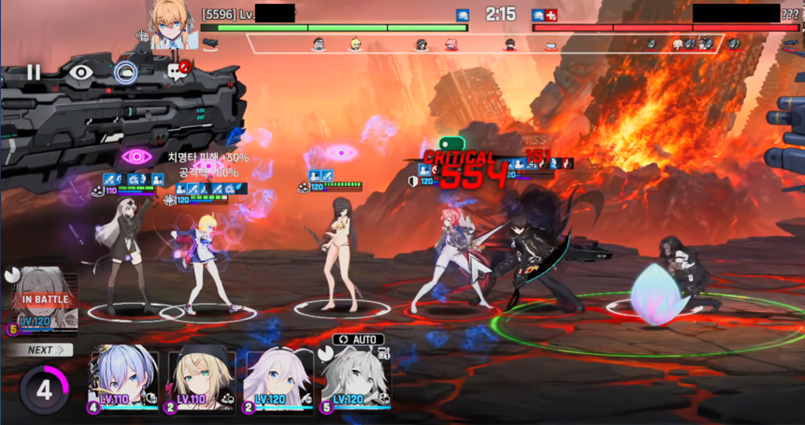
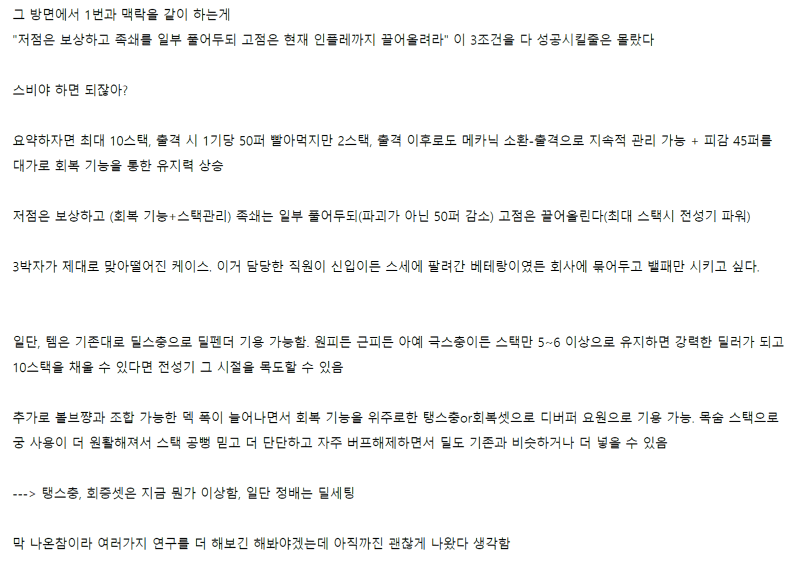

2026-04-29
세계의 의지 아나필리스LAST AWAKENED
스트라이커에 강하고 디펜더에 약한 원거리 퓨어 딜러. 순간적으로 공중 유닛이 되는 특수 기믹.
STUDIOBSIDE · 2024.08 — 2026.08
캐릭터의 애니메이션을 중심으로 액션, 전투 컨셉, 스탯 등 인게임 측면의 디자인을 Lua Script를 이용하여 구현하는 일을 담당했습니다.
2D 스파인 애니메이션을 기반으로 움직이는 수많은 캐릭터들이 반대편의 적을 향해 나아가 라인을 형성하며 다대다 전투를 합니다. 실시간 PVP인 ‘건틀렛’ 랭킹전을 중심으로 컨텐츠가 소비되며, PVP 환경을 고려하여 캐릭터가 제작됩니다.
플레이어는 8기의 유닛을 편성해야 하며, 최대 10코스트까지 자연 회복하는 출격자원을 소모하며 유닛을 원하는 타이밍에 출격시킬 수 있습니다. 유닛은 출격 후 정해진 행동패턴에 따라 자동으로 전투합니다.

스트라이커에 강하고 디펜더에 약한 원거리 퓨어 딜러. 순간적으로 공중 유닛이 되는 특수 기믹.
회피 기반 전열 유지 + 광범위 실명 디버프를 부여하는 근거리 탱커.
체력이 절반 이하인 유닛에게 추가 피해를 가하는 ‘거대한 공중 요새’ 콘셉트의 원거리 딜러.
자신과 동등~이하 코스트 유닛 상대로 강점이 두드러지는 근거리 딜탱.
공중 유닛을 방해하며 치명타 피해 특화 공격을 가하는 원거리 딜러.
넉백 덱을 보조하는 디버프를 부여하는 원거리 딜러.
특수기 스택을 축적하고, 아군 조건 달성 시 스택을 소모하여 강력한 공격 버프를 제공하는 서포터.
| 캐릭터 | 밸런싱 방향 |
|---|---|
| 이볼브 원 | “메카닉 아군 포식”이라는 컨셉을 유지하되 리스크에 대한 고점을 높여줌 |
| 네퀴티아 | 엘리시움 교향악단 팀업의 아군 유닛들과 시너지를 강화하여 사용감 제고 |
| 니콜 | ‘넉백’ 특화 유닛이라는 유니크한 방향성을 더 뾰족하게 설정 |
| 모르스 | ‘아군 사망 시’ 분노하여 스탯이 강화되는 조건을 ‘모든 유닛’으로 확장 |
| 카린 웡 | 공중 유닛 저격 유닛이라는 유니크한 방향성을 극단적으로 강화하여 직관적인 카운터 유닛으로 티어 재정립 |
| 하랍 | 사디스트라는 컨셉에 맞춰 아군을 타격하며 버프를 부여하는 컨셉으로 변경 |

적이 사망하면 힘을 빼앗아 강해지는 형태의 고난이도 레이드 보스.
궁극기를 4회 시전하기 전 처치하는 것을 목표로 하는 고난이도 레이드 보스.
‘방어 관통률’ 장비를 무력화해 디버퍼 및 추가 장비 세팅을 고려하도록 만든 타임어택형 보스.